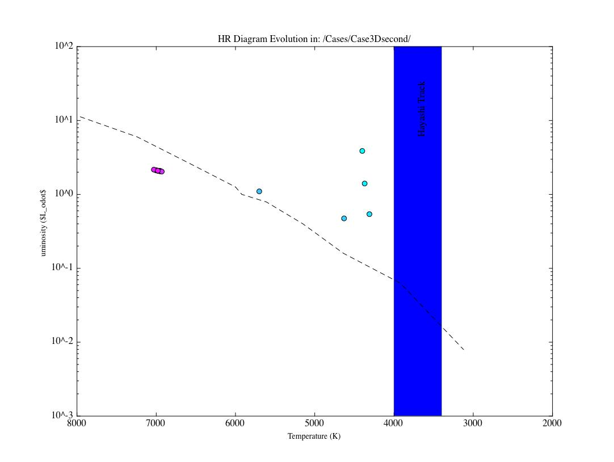

Figure
1: HR diagram evolution of the Extinguish1 case.

Figure
2: Internal structural evolution of the Extinguish1 case.
Date & Time: April 4, 2012
Location: Campus
Computing context: Macho Mac: /Desktop/Research/BodenheimerCode/workingdir/UnalteredCode/
Scripts/Software created today:
addcol: added to /usr/local/bin/, so it's in my path and you don't have to copy/add/link it to every directory where you want to use it. It adds a '.' to the 'put a * here if convection is occuring in this mass cell' column of the model files. So, you run this on all the model files in a new results directory immediately after you've parsed the raw simulation output into individual models.
Use as follows: > ./addcol <name of model to be examined>
./follow <filename>
What it does: launches 2 xterms to follow the progress of a simulation by grepping the simulation's text output file for 'dtime' and 'record', respectively
Where it lives: /usr/local/bin/ (you need root access to write to that directory)
Language it's written in: shell script/basic unix commands
plot_x_vs_y.py
What it does: plots any of the HR_model_info variables against any other HR_model_info variable, for an arbitrary number of results/cases. Prompts the user to specify which variables to assign to the x and y axes, then prompts user to select HR_model_info files to read in. Then, asks the user if they want to save the resulting plot, and where. The output filename is automatically assigned to be Yvar_vs_Xvar.jpg/pdf, for ease of organization.
Where it lives: /Desktop/Research/BodenheimerCode/
Language it's written in: python
Useful computer stuff figured out today:
Useful computer stuff figured out recently:
Set a (as yet non-permanent) command line alias to take me to the /Users/laurel/Desktop/Research/BodenheimerCode/workingdir/UnalteredCode/results folder:
plots="cd /Users/laurel/Desktop/Research/BodenheimerCode/workingdir/UnalteredCode/results"
How to automatically fill in that '* goes here to indicate convection is happening at this mass cell' column in all the model files in the /results/ directory.
file="0_model_info.txt"; cat $file| awk '{if ( match($0,"MODEL") || (match($0,"dM") ) ) { } else if ($2 != "*") {$1 = $1 " ."; } else {$1=$1"";}; if (NF >11) {print $0;}};' > temp.txt; mv temp.txt $file
A shell script called 'n' (in /usr/local/bin/. You'll need to use 'sudo' to do anything to the file.) that takes care of the setting up a growlnotification for any command you run. Use as follows:
> n command_name_here &
If you get the following error when attempting to use growlnotify:
growlnotify[681:903] could not find local GrowlApplicationBridgePathway, falling back to NSDNC
Go to System Preferences --> Growl --> Stop Growl (then Start Growl)
From last time: I copied over a clean version of Peter's code (as initially modified by Greg to get it to work) from my "backup" dir in to "UnalteredCode" in my working dir.
All runs involving Peter's version of the code mentioned here are produced using that clean copy of his code in my working dir. (I'm not messing with the actual backup copy!)
If you want to add a constant numerical value to the names of all the (numbered) files in a directory, enter the following command at the unix prompt, when you're within that directory:
ls *_model_info.txt | sort -r | awk -F'[_]' '{old=$0; n=$1+100; sub($1,n,$0); print "mv " old " "$0}' | sh
If you want a simulation to 'pick up' where the results of a previous one left off, make sure to set MODA = -1 in the .start file
Figured out how to get the legend on my python-generated figures to have multiple columns (and thereby fit on the visible portion of the graph):
legend(prop={'size':8},loc='lower center', ncol=3, fancybox=True, shadow=True)
Updated both MyPythonGUIPlottingScript.py and plot_HR_evolution.py to include this nicer, more legible version of the legend.
To set a pop-up notification on my desktop that lets me know when one of these really long thecode.f runs is finished (running in the background), start the run like this:
./thecode < inputfile.start > outputfile && growlnotify -s -m 'TheCode finished running' &
It looks like thecode.f can't handle NRIT values above 1000. Either that, or it can't figure out how to do mod-arithmatic on NMOD values above 9999. So, you can't really run the code for 10000 timesteps and have it write output every 1000 steps. For now, my best work around is to let the code go for 9500 time steps, and have it write out model data every 500 steps.
Should look into this more next time, in thecode.f itself.
Continuing from last time:
Next time: it might be useful to get the fortran code to put out some information about when/where/how much fusion is turning on within the star. In particular, it'd be revealing to correlate that info with models' positions on the HR diagram. (The idea here is to test my assumption that fusion is turning on at that "elbow" in the PMS track.)
I need to check, somehow, what's going on with the fusion energy generation rate as a function of time in TheCode.f.
To Do/Today:
Run the just-tested version of the fusion-less code on Case3Dsecond-like inputs
Call this run Extinguish1
It stops somewhere between the 710 and 720th timestep with a 'stop invstate' error.
Will
need to run a clean version of pmsstar1.start (WITH THE FUSION-ON
CODE!) to get a clean starting model for those runs
Compare those runs to the ones shown in Figure0.3 below (is it evolving in the same way?)

Figure
0.3: Same as Figure 3a from last time (April 3, 2012). Shows
the HR diagram evolution of the Cwrk=1, Crad=1, SMAX = -2e37,
Efusion = off case, started from the final model on record in
pmsstar1.mod (run from pmsstar1.start with the fusion = on version
of TheCode.f)
Results
of the Extinguish1 run:
Figure
1: HR diagram evolution of the Extinguish1 case.
Figure
2: Internal structural evolution of the Extinguish1 case.
Question to self: what are the temperature/lum. coordinates of white dwarves on the HR diagram?
They can range in temperature from 4000K up to... 1.5e5K? There isn't really a 'main sequence' for WDs, in the sense that they must all hew to a narrow band of L/T parameter space. That said, they tend to get dim over time as they cool. When they first form, though, they can be quite bright.
It would be helpful to plot surface temperature vs. 'surface' radius (as taken from the tau=2/3 surface) of the star as a function of time to see if it's becoming white-dwarf-like in the absence of internal fusion.
Done. Here's what it looks like for the Extinguish1 case:

Figure
3: The radius (measured at the tau = 2/3 surface of the star)
vs. time for the Extinguish1 case. The y-axis label *should* read
"Radius (in units of Rsun)".
Note to self: make a figure 3 analog for a 1msun with fusion on case, for comparison. How long does it take such a system to reach its equilibrium radius? Does it follow the same path as the Extinguish1 system does in Figure 3?
Next Steps:
Make a Radius vs. time plot comparing Extinguish1 and pmsstar1Test (to see how they differ, or don't)
Maybe do the same for L, P, and T vs. time, too, for both of those cases
Try to get Extinguish1 to evolve farther forward in time
Try decreasing the Crad setting.
The 'stop invstate' error is happening because TheCode thinks the Pgas is negative, which is of course unphysical. Since it calculates Pgas by subtracting Prad from... something, you can eliminate this error by reducing Prad. You do that by turning down Crad.
If Extinguish1 can be coaxed into evolving further in time, see:
if it turns into a white-dwarf-like thing
How its R/P/L/T surface values vary with time, compared to something like pmsstar1Test
May have to run pmsstar1Test farther forward in time to compare the two cases meaningfully, if this all works.
Take a look at the input files of mine (for the no fusion vs. with fusion cases) that weren't behaving as expected back around March 29.
See if I can find the input parameter that was responsible for that weird behavior
Compare the results from the 'unaltered' code to results from my own altered version of TheCode.f
R/L/P/T as a function of time (plot_x_vs_y.py)
HR diagram evolution/behavior (plot_several_HR_diagrams.py)